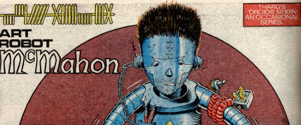

A poster series of editorial and strip creation droids.
Art by Robin Smith
| Title | Parts | Pages | w indicates a wraparound coverCovers | Year(s) | Issues | Writer | Artist | Colourist | Letterer |
|---|---|---|---|---|---|---|---|---|---|
Star Pin‑Up.D.J.1 | 1 | 1 | 0 | 1982 | 279 | n/a | Robin Smith | <-- | n/a |
Star Pin‑Up.D-Mil | 1 | 1 | 0 | 1982 | 280 | n/a | Robin Smith | <-- | n/a |
Star Pin‑Up.Burt | 1 | 1 | 0 | 1982 | 287 | n/a | Robin Smith | <-- | n/a |
Star Pin‑Up.Spex | 1 | 1 | 0 | 1982 | 288 | n/a | Robin Smith | <-- | n/a |
Star Pin‑Up.Lettering Robot [Tom] Frame | 1 | 1 | 0 | 1982 | 291 | n/a | Robin Smith | <-- | n/a |
Star Pin‑Up.Art Robot [Massimo] Belardinelli | 1 | 1 | 0 | 1982 | 295 | n/a | Robin Smith | <-- | n/a |
Star Pin‑Up.Script Robot Alan Moore | 1 | 1 | 0 | 1983 | 322 | n/a | Robin Smith | <-- | n/a |
| Art Robot [Brett] Ewins | 1 | 1 | 0 | 1983 | 323 | n/a | Robin Smith | <-- | n/a |
| Art Robot [Carlos] Ezquerra | 1 | 1 | 0 | 1983 | Reprints: M402 (supplement)349 | n/a | Robin Smith | <-- | n/a |
| Art Robot [Mike] McMahon | 1 | 1 | 0 | 1984 | 359 | n/a | Robin Smith | <-- | n/a |
| year | episodes | pages |
| 1977 | 0 | 0 |
| 1978 | 0 | 0 |
| 1979 | 0 | 0 |
| 1980 | 0 | 0 |
| 1981 | 0 | 0 |
| 1982 | 6 | 6 |
| 1983 | 3 | 3 |
| 1984 | 1 | 1 |
| 1985 | 0 | 0 |
| 1986 | 0 | 0 |
| 1987 | 0 | 0 |
| 1988 | 0 | 0 |
| 1989 | 0 | 0 |
| 1990 | 0 | 0 |
| 1991 | 0 | 0 |
| 1992 | 0 | 0 |
| 1993 | 0 | 0 |
| 1994 | 0 | 0 |
| 1995 | 0 | 0 |
| 1996 | 0 | 0 |
| 1997 | 0 | 0 |